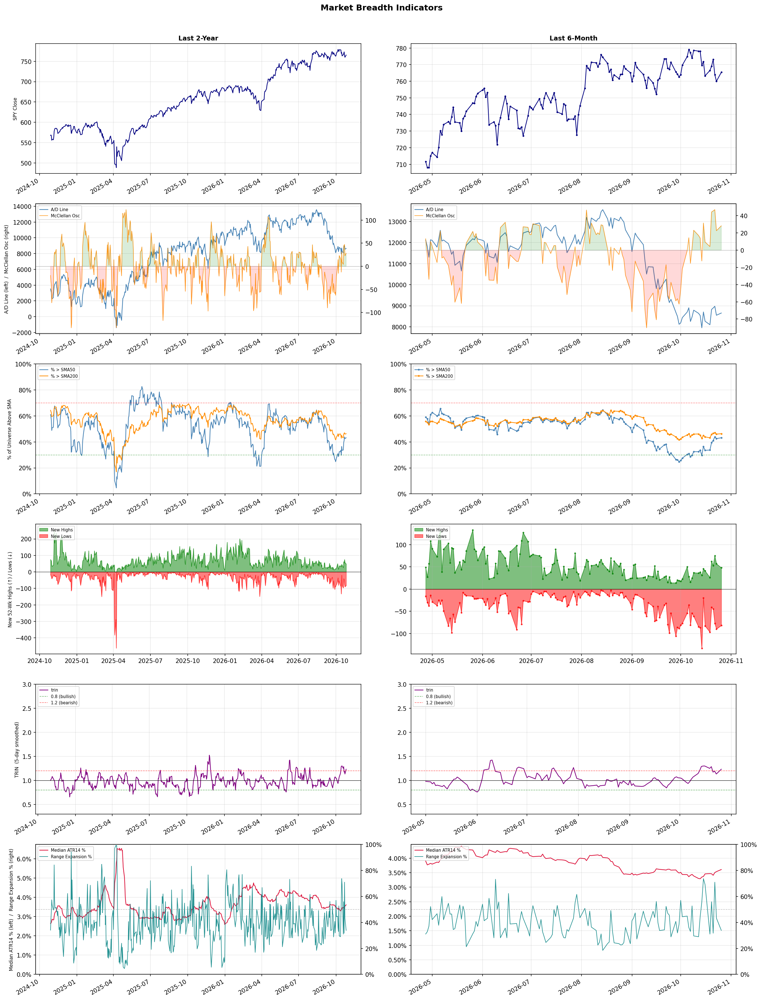

A daily market breadth and sector rotation report for active investors
| Item | Read |
|---|---|
| Regime | Defensive |
| Risk posture | Defensive |
| Universe | 1,315 stocks tracked · 48 new 52-week highs · 30 active swing setups |
| Breadth | only 43.2% of tracked stocks are above SMA50, new lows exceed new highs (82 vs 48) |
| Leadership | Oil & Gas E&P, Oil & Gas Refining & Marketing, and Oil & Gas Integrated |
| Weakest groups | Uranium, Other Industrial Metals & Mining, and Electrical Equipment & Parts |
Use this report to prioritize research and chart review; validate entries, stops, liquidity, earnings, and risk before acting.
| Item | Read |
|---|---|
| Primary read | Defensive regime with Defensive risk posture. |
| Research queue | APA, NOG, RRC, BTE, VET |
| Leadership focus | Oil & Gas E&P, Oil & Gas Refining & Marketing, and Oil & Gas Integrated |
| Caution list | Uranium, Other Industrial Metals & Mining, and Electrical Equipment & Parts |
| Review prompt | Check extension risk, chart location, fundamentals, valuation, and earnings before using any research row. |
| Item | Read |
|---|---|
| Primary read | 3 active risk warnings; use screen output as watchlist input only. |
| Bullish screens | DVN, OVV, PR, XOM, ESTC |
| Bearish screens | SOUN, HE, KEP, APLD, CIFR |
| Alerts / levels | Automated trigger, stop, ATR, liquidity, reward/risk, and event-risk levels are pending future enrichment. |
| Review prompt | Open the linked chart, define trigger and invalidation, then check liquidity and event risk independently. |
Risk Posture: Defensive — screen backdrop favors caution; require independent risk review before new exposure
Metric context: McClellan below -50 = elevated selling pressure; below -100 = washout territory. Range Expansion = share of stocks with daily range above their 20-day average. Signal Density = share of tracked names appearing in signal screens.
| Breadth Date | % > SMA50 | % > SMA200 | New Highs | New Lows | McClellan | Median Range | Avg Range | Median ATR14 | Range Expansion | Signal Density |
|---|---|---|---|---|---|---|---|---|---|---|
| 2026-10-26 | 43.2% | 46.3% | 48 | 82 | 28.2 | 2.9% | 3.6% | 3.6% | 33.9% | 5.8% |

Prior comparison date: October 23, 2026
| Metric | Prior | Current | Change |
|---|---|---|---|
| Regime | Defensive | Defensive | unchanged |
| Risk Posture | Defensive | Defensive | unchanged |
| % > SMA50 | 42.5% | 43.2% | +0.6 pts |
| % > SMA200 | 46.0% | 46.3% | +0.3 pts |
| New Highs | 57 | 48 | -9 |
| New Lows | 90 | 82 | +8 |
Top-10 industries entering: Medical Care Facilities and Software - Application. Top-10 industries leaving: Apparel Manufacturing and Discount Stores. New multi-signal long setups: AMH, COLB, DVN, ESTC, FTV, HALO. New multi-signal short setups: APLD, DJT, FLG, HE.
| Status | Tickers | Read |
|---|---|---|
| Added | AMH, APLD, COLB, DJT, DVN, ESTC, FLG, FTV | New technical screen matches vs prior report. |
| Removed | AMPL, APP, ARHS, ASPI, AVTX, BBY, CDE, DOCU | No longer present in today's technical screen matches. |
| Still Active | AVPT, BOX, CART, CBRE, CIFR, CTAS, DXC, EBC | Appeared in both current and prior reports. |
| Promoted | none | Model Screen Score improved by at least 15 points. |
| Downgraded | none | Model Screen Score declined by at least 15 points. |
| Direction | Industry | ETF | Prior Rank | Current Rank | Days | Rank Change |
|---|---|---|---|---|---|---|
| Rose | Apparel Manufacturing | N/A | 76 | 11 | 42 | +65 |
| Rose | Restaurants | N/A | 81 | 25 | 35 | +56 |
| Rose | Building Products & Equipment | XHB | 83 | 30 | 35 | +53 |
| Rose | Utilities - Regulated Electric | XLU | 76 | 24 | 35 | +52 |
| Rose | REIT - Hotel & Motel | XLRE | 57 | 5 | 35 | +52 |
Bull: The Apparel Manufacturing industry is experiencing a rise in relative strength due to favorable industry trends driven by shifting trade dynamics and a resurgence in consumer demand. Recent headlines highlight the potential for growth as trade deals and a strategic shift in sourcing from China are revitalizing the sector, while analysts are optimistic about several textile-apparel stocks poised to benefit from these changes, indicating a strong outlook for the industry through 2026. This combination of macroeconomic factors and positive market sentiment positions the Apparel Manufacturing sector for significant gains.
Bear: While the Apparel Manufacturing industry may currently exhibit rising relative strength, this optimism overlooks potential headwinds such as ongoing supply chain disruptions, inflationary pressures on raw materials, and the risk of changing consumer preferences towards sustainability. Additionally, the shift in sourcing from China could lead to increased costs and operational challenges, undermining profit margins and ultimately dampening the anticipated growth in the sector. The reliance on favorable trade deals may also prove precarious, as geopolitical tensions could disrupt these arrangements, leaving the industry vulnerable to unforeseen setbacks.
Verdict: The Apparel Manufacturing industry's rise is fundamentally driven by shifting trade dynamics, particularly the strategic move away from reliance on China, coupled with a resurgence in consumer demand as economies recover. However, key risks remain, particularly ongoing supply chain disruptions and inflationary pressures on raw materials, which could erode profit margins and hinder growth if not managed effectively. Stakeholders should closely monitor these challenges while capitalizing on favorable trade developments to maximize potential gains.
Sources: Google News
Bull: The rising relative strength of the restaurant industry can be attributed to a combination of resilient consumer spending and strategic positioning by key players. Despite headlines indicating a decline in dining frequency, companies like Brinker and Yum China are leading the charge with strong quant ratings, suggesting they are effectively adapting to changing consumer preferences and economic conditions. Additionally, the identification of restaurant stocks as attractive investment opportunities by Wall Street, as highlighted in recent analyses, underscores a growing confidence in the sector's recovery and long-term growth potential.
Bear: While the rising relative strength of the restaurant industry may seem promising, the decline in dining frequency suggests a fundamental shift in consumer behavior that could undermine long-term growth. The strong quant ratings for companies like Brinker and Yum China may not fully account for the broader economic pressures, such as inflation and changing consumer preferences towards more affordable dining options or home cooking. Additionally, Wall Street's identification of restaurant stocks as attractive opportunities could be more speculative than based on solid fundamentals, especially in a market increasingly sensitive to economic headwinds.
Verdict: The restaurant industry's rising strength is primarily driven by resilient consumer spending and strategic adaptations by leading companies, which are capitalizing on evolving dining preferences despite a decline in frequency. However, the key risk lies in the potential for sustained economic pressures, such as inflation and a shift towards more cost-effective dining options, which could hinder long-term growth and profitability. Investors should closely monitor these economic indicators and consumer behavior trends to make informed decisions.
Sources: Google News
Bull: The Building Products & Equipment sector is experiencing rising relative strength primarily due to increased infrastructure investment, as highlighted in the TradingView article discussing heavy construction stocks benefiting from this trend. Additionally, the positive outlook for construction stocks, as noted in The Motley Fool's list of the best construction stocks for 2026, indicates strong demand and growth potential in the sector, further bolstered by companies like SPX Technologies, which are positioned to capitalize on these macroeconomic tailwinds.
Bear: While the rising relative strength in the Building Products & Equipment sector may seem promising, it is crucial to consider the potential headwinds that could undermine this bullish outlook. Increased infrastructure investment often comes with delays and budget overruns, which can dampen actual spending and project completions. Additionally, rising interest rates and inflationary pressures could lead to higher borrowing costs and reduced consumer spending, negatively impacting demand for construction-related products and services, ultimately stalling the growth anticipated by bullish analysts.
Verdict: The Building Products & Equipment sector is likely experiencing rising relative strength due to increased infrastructure investment and strong demand for construction stocks, driven by favorable macroeconomic conditions. However, key risks include potential project delays and budget overruns, as well as rising interest rates and inflation, which could dampen consumer spending and ultimately hinder growth in the sector. Investors should closely monitor these economic indicators and project timelines to assess the sustainability of this upward trend.
Sources: Google News
Bull: The Utilities - Regulated Electric sector is experiencing rising relative strength primarily due to increasing investor confidence in power demand growth, as highlighted by Morningstar's report on the sector's rally. Additionally, the focus on dividend-paying utility stocks, as noted by U.S. News, suggests that investors are seeking stable income amidst market volatility, further bolstering the attractiveness of this sector. The positive outlook for electric utility stocks, as indicated by The Motley Fool's list of top picks for 2026, reinforces the belief in robust long-term growth potential within this industry.
Bear: While the Utilities - Regulated Electric sector may currently exhibit rising relative strength and attract investors seeking stable income, this trend could be misleading given the potential headwinds from rising interest rates and inflation, which typically pressure utility stock valuations. Additionally, the increasing focus on renewable energy sources may lead to regulatory changes and capital expenditure requirements that could strain traditional utility companies, ultimately undermining their profitability and growth prospects in the long term.
Verdict: The Utilities - Regulated Electric sector is experiencing rising relative strength due to increased investor confidence in power demand growth and the appeal of dividend-paying stocks amidst market volatility. However, key risks include potential headwinds from rising interest rates and inflation, which could pressure valuations, as well as regulatory changes and capital expenditures related to the shift towards renewable energy that may impact traditional utility profitability. Investors should remain vigilant about these risks while considering opportunities in this sector.
Sources: Google News
Bull: The REIT - Hotel & Motel sector is experiencing rising relative strength due to a robust recovery in travel demand and increased consumer spending on hospitality, as highlighted by the positive sentiment around major players like Host Hotels & Resorts, which is noted as a standout performer this earnings season. Additionally, articles from sources like Morningstar and The Motley Fool emphasize the strong fundamentals and growth potential of top hospitality REITs, suggesting a favorable outlook driven by ongoing improvements in occupancy rates and revenue per available room (RevPAR) as the industry rebounds from pandemic lows.
Bear: While the bullish sentiment around the REIT - Hotel & Motel sector is driven by a perceived recovery in travel demand and consumer spending, several underlying risks could undermine this optimism. Rising interest rates and inflationary pressures may dampen discretionary spending on travel and hospitality, leading to potential declines in occupancy rates and RevPAR. Furthermore, the recent headlines may reflect short-term performance rather than sustainable growth, as ongoing economic uncertainties and potential recessions could significantly impact the sector's long-term viability.
Verdict: The REIT - Hotel & Motel sector's rising strength is primarily driven by a robust recovery in travel demand and increased consumer spending, as evidenced by improved occupancy rates and RevPAR among leading players like Host Hotels & Resorts. However, key risks such as rising interest rates and inflation could dampen discretionary spending, potentially undermining the sector's growth trajectory and leading to declines in occupancy and revenue if economic conditions worsen. Investors should monitor these macroeconomic indicators closely to assess the sustainability of the current bullish trend.
Sources: Google News
| Direction | Industry | ETF | Prior Rank | Current Rank | Days | Rank Change |
|---|---|---|---|---|---|---|
| Fell | Semiconductor Equipment & Materials | SOXX | 6 | 77 | 28 | -71 |
| Fell | Electronic Components | XLK | 8 | 79 | 28 | -71 |
| Fell | Capital Markets | KCE | 8 | 76 | 35 | -68 |
| Fell | Agricultural Inputs | N/A | 7 | 73 | 42 | -66 |
| Fell | Copper | COPX | 3 | 64 | 14 | -61 |
Bear: While the bull analyst attributes the sector's decline to profit-taking after a strong year, the persistent uncertainty in the chip equipment outlook raises deeper concerns about the sustainability of demand in the semiconductor industry. With recent headlines highlighting significant drops in key players like Applied Materials and Lam Research, it suggests that investor confidence is waning amid fears of a potential slowdown in AI investments and broader economic challenges, which could lead to a prolonged downturn in the sector rather than a mere correction. Furthermore, the overall falling relative strength trend indicates that the sector may be facing structural issues rather than just temporary fluctuations.
Bull: The recent decline in the Semiconductor Equipment & Materials sector's relative strength can be attributed to profit-taking by investors following a strong performance over the past year, as highlighted by the headlines indicating significant drops in major stocks like Applied Materials and Lam Research. Additionally, the uncertainty surrounding the chip equipment outlook, as noted in the Yahoo Finance article, suggests that market participants are cautious about future demand, particularly in the face of fluctuating AI investment expectations, which have been a key driver of growth in the sector.
Verdict: The recent decline in the Semiconductor Equipment & Materials sector is primarily driven by profit-taking after a strong performance, compounded by heightened uncertainty regarding future demand, particularly in light of fluctuating AI investment expectations. However, the key risk from the bear case is the potential for a prolonged downturn if investor confidence continues to erode amid fears of a slowdown in both AI investments and broader economic conditions, suggesting that market participants should closely monitor demand indicators and economic signals before making significant investments in the sector.
Sources: Google News
Bear: While the bull analyst attributes the decline in relative strength to sector-wide selling pressures and highlights Amphenol's strong Q2 earnings as a sign of resilience, this perspective overlooks the broader macroeconomic challenges facing the electronic components industry. Persistent supply chain disruptions, rising material costs, and the potential for reduced consumer spending amid economic uncertainty could exacerbate the difficulties for many companies in the sector, suggesting that the overall outlook remains precarious despite isolated instances of strong performance. Moreover, the mixed results from firms like TTM Technologies indicate that the issues are not merely temporary but may signal deeper, structural weaknesses within the industry.
Bull: The recent decline in the relative strength of the Electronic Components industry can be attributed to sector-wide selling pressures, as highlighted by Corning's 5.3% drop, which reflects broader market concerns impacting investor sentiment. Additionally, while Amphenol's strong Q2 earnings showcase resilience within the sector, the mixed performance of companies like TTM Technologies indicates underlying challenges, such as supply chain disruptions or fluctuating demand, that are weighing on the industry's overall outlook.
Verdict: The recent decline in the Electronic Components industry is primarily driven by persistent supply chain disruptions and rising material costs, which are exacerbated by broader macroeconomic uncertainties that could dampen consumer spending. While isolated strong performances, such as Amphenol's Q2 earnings, suggest resilience, the mixed results from companies like TTM Technologies highlight deeper structural challenges that could pose significant risks to the industry's recovery. Investors should remain cautious and consider these macroeconomic factors when evaluating potential investments in the sector.
Sources: Google News
Bear: While the bull analyst points to macroeconomic pressures and sector-specific challenges as the primary reasons for the decline in relative strength in the Capital Markets sector, it's crucial to consider the long-term implications of rising interest rates and tightening monetary policy. These factors can significantly dampen trading volumes and investment activity, leading to reduced profitability for capital markets firms. Additionally, the shift of capital towards tech and semiconductors may not just be a temporary trend; it could indicate a structural change in investor sentiment favoring growth-oriented sectors, leaving capital markets at a disadvantage in the current economic climate.
Bull: The Capital Markets sector is likely experiencing a decline in relative strength due to a combination of macroeconomic pressures and sector-specific challenges, as highlighted by the recent headlines. The sharp drops in AI stocks and the overall market volatility, driven by rising oil prices, may have led investors to seek safer assets or sectors with more stable growth prospects, thereby diverting capital away from capital markets. Additionally, while some sectors are primed for growth, as noted by J.P. Morgan, the focus on tech inflows, particularly in semiconductors, suggests that investors are favoring sectors with immediate recovery potential over capital markets, contributing to its relative weakness.
Verdict: The Capital Markets sector is likely declining due to a combination of macroeconomic pressures, such as rising interest rates and heightened market volatility, which are driving investors towards safer, growth-oriented sectors like technology and semiconductors. The key risk from the bear case is that if this trend persists, it could lead to sustained reductions in trading volumes and investment activity, further eroding profitability for capital markets firms. Investors should consider reallocating capital to sectors with stronger growth prospects while closely monitoring interest rate developments and their impact on market dynamics.
Sources: Google News
Bear: While the bull analyst suggests that the Agricultural Inputs sector is merely experiencing a shift in investor sentiment, it's crucial to consider the fundamental pressures facing the industry, such as rising input costs, supply chain disruptions, and potential regulatory changes that could negatively impact margins. Additionally, the recent spike in grain-related assets may be a short-term reaction to specific market events rather than a sustainable trend, indicating that the broader Agricultural Inputs ETF could continue to underperform as these underlying challenges persist. Lastly, the uncertainties surrounding El Niño could exacerbate volatility and risk in agricultural production, further dampening investor confidence in the sector.
Bull: The Agricultural Inputs sector is likely experiencing a decline in relative strength due to broader economic concerns and shifting investor sentiment towards more economically sensitive sectors, as highlighted by the Seeking Alpha article on the materials sector breaking out. Additionally, the recent surge in grain-related assets, as noted by Moomoo, suggests that capital is being redirected towards specific agricultural stocks rather than the sector as a whole, potentially leading to underperformance in the Agricultural Inputs ETF. Furthermore, the mention of El Niño in Investing.com indicates weather-related uncertainties that could impact agricultural yields, contributing to a cautious outlook among investors.
Verdict: The Agricultural Inputs sector is likely declining due to fundamental pressures such as rising input costs, supply chain disruptions, and regulatory challenges that are squeezing margins. Additionally, the uncertainty surrounding El Niño poses a significant risk, potentially exacerbating volatility in agricultural production and further undermining investor confidence. Investors should closely monitor these factors and consider reallocating to sectors with more stable growth prospects.
Sources: Google News
Bear: While the bull analyst attributes the decline in copper's relative strength primarily to tariff concerns and a shift in investor focus, it is essential to consider the broader macroeconomic environment, including potential global recessions and slowing demand from key consumers like China. Additionally, the recent headlines indicate that even amid optimistic projections for copper stocks, significant price drops for major players like Freeport-McMoRan suggest underlying vulnerabilities in the copper market, raising doubts about the sustainability of any rally and the overall health of the sector.
Bull: The recent decline in copper's relative strength can be attributed to rising concerns over tariffs, as highlighted by the headline "Copper Stocks Tumble as Tariff Doubt Reverses Record Rally," which suggests that uncertainty surrounding trade policies is negatively impacting investor sentiment. Additionally, the broader market's focus on other mining stocks, particularly in Australia, as seen in the reports of significant gains among Australian mining stocks, may be diverting attention and capital away from copper, further contributing to its relative weakness.
Verdict: The recent decline in copper prices is primarily driven by rising concerns over tariffs and shifting investor focus towards more lucrative Australian mining stocks, which has weakened demand for copper investments. However, the key risk lies in the broader macroeconomic environment, particularly the potential for global recessions and decreased demand from major consumers like China, which could further exacerbate copper's price volatility and undermine any recovery in the sector. Investors should closely monitor these macroeconomic indicators and tariff developments to gauge the sustainability of copper's market performance.
Sources: Google News
| Industry | Rank | ETF | 7d | 14d | 28d | 42d | Chg 42d | Size | 20D | 60D | Composite | Active Setups |
|---|---|---|---|---|---|---|---|---|---|---|---|---|
| Oil & Gas E&P | 1 | XOP | 3 | 21 | 32 | 5 | +4 | 26 | 17.6% | 16.8% | 0.950 | 0 |
| Oil & Gas Refining & Marketing | 2 | CRAK | 1 | 1 | 1 | 1 | -1 | 7 | 10.3% | 26.5% | 0.945 | 0 |
| Oil & Gas Integrated | 3 | XLE | 2 | 5 | 4 | 3 | 0 | 10 | 9.6% | 13.3% | 0.913 | 1 |
| Medical Care Facilities | 4 | IHF | 21 | 16 | 14 | 8 | +4 | 9 | 11.7% | 15.9% | 0.896 | 0 |
| REIT - Hotel & Motel | 5 | XLRE | 8 | 12 | 31 | 48 | +43 | 9 | 10.6% | 3.5% | 0.895 | 0 |
| Household & Personal Products | 6 | XLP | 5 | 8 | 25 | 21 | +15 | 12 | 10.8% | 13.5% | 0.889 | 0 |
| Insurance Brokers | 7 | N/A | 14 | 48 | 38 | 16 | +9 | 6 | 10.3% | 13.0% | 0.871 | 0 |
| Health Information Services | 8 | N/A | 7 | 2 | 3 | 4 | -4 | 12 | 5.4% | 44.5% | 0.869 | 1 |
| Financial Data & Stock Exchanges | 9 | N/A | 19 | 24 | 40 | 11 | +2 | 7 | 12.1% | 8.7% | 0.861 | 0 |
| Software - Application | 10 | IGV | 12 | 13 | 37 | 12 | +2 | 74 | 13.1% | 15.7% | 0.851 | 0 |
Rank columns (7d–42d) show the industry's rank that many trading days ago — lower is stronger. Chg 42d = rank change vs 42 trading days ago — positive means the industry moved up. 20D and 60D are the mean stock return within the industry over that period. Active Setups: count of today's swing-trade candidates from this industry appearing across all signal screens.
| Industry | Rank | ETF | 7d | 14d | 28d | 42d | Chg 42d | Size | 20D | 60D | Composite | Active Setups |
|---|---|---|---|---|---|---|---|---|---|---|---|---|
| Uranium | 87 | URA | 87 | 83 | 82 | 69 | -18 | 6 | -18.1% | -21.4% | 0.033 | 0 |
| Other Industrial Metals & Mining | 86 | N/A | 82 | 80 | 66 | 65 | -21 | 21 | -22.6% | -19.4% | 0.050 | 0 |
| Electrical Equipment & Parts | 85 | XLI | 86 | 73 | 51 | 85 | 0 | 12 | -22.6% | -29.1% | 0.051 | 0 |
| REIT - Mortgage | 84 | N/A | 85 | 86 | 83 | 60 | -24 | 11 | -9.3% | -19.6% | 0.111 | 0 |
| Resorts & Casinos | 83 | N/A | 79 | 85 | 86 | 75 | -8 | 6 | -7.5% | -24.7% | 0.115 | 0 |
| Utilities - Renewable | 82 | N/A | 80 | 78 | 65 | 77 | -5 | 6 | -18.0% | -26.0% | 0.118 | 0 |
| Aerospace & Defense | 81 | ITA | 84 | 82 | 53 | 79 | -2 | 26 | -16.5% | -17.8% | 0.136 | 0 |
| Solar | 80 | TAN | 83 | 79 | 85 | 86 | +6 | 8 | -5.8% | -25.1% | 0.137 | 0 |
| Electronic Components | 79 | XLK | 69 | 22 | 8 | 72 | -7 | 10 | -20.4% | -14.5% | 0.146 | 0 |
| Auto Parts | 78 | N/A | 72 | 72 | 59 | 57 | -21 | 19 | -9.7% | -16.2% | 0.156 | 1 |
Rank columns (7d–42d) show the industry's rank that many trading days ago — lower is stronger. Chg 42d = rank change vs 42 trading days ago — positive means the industry moved up. 20D and 60D are the mean stock return within the industry over that period. Active Setups: count of today's swing-trade candidates from this industry appearing across all signal screens.
These are research candidates from top-ranked stocks, capped at five names per industry to avoid over-concentration. Returns shown (60D, 120D, 250D) are historical — they reflect where prices have already moved, not forward expectations. Extension Risk flags names that may require extra patience or a better entry point. They are not buy signals.
Chart: TV = TradingView chart (opens in browser); PDF = local chart file (if downloaded).
| Ticker | Name | Industry | Industry Rank | Market Cap | 60D Hist | 120D Hist | 250D Hist | Extension Risk | Research Reason | Chart |
|---|---|---|---|---|---|---|---|---|---|---|
| APA | Apache | Oil & Gas E&P | 1 | N/A | 39.1% | 26.1% | 127.7% | Constructive | Top-ranked in industry | TV |
| NOG | Northern Oil & Gas | Oil & Gas E&P | 1 | N/A | 37.3% | 11.6% | 39.6% | Constructive | Top-ranked in industry | TV |
| RRC | Range Resources | Oil & Gas E&P | 1 | N/A | 33.8% | 25.1% | 44.8% | Constructive | Top-ranked in industry | TV |
| BTE | Baytex Energy | Oil & Gas E&P | 1 | N/A | 21.7% | 6.4% | 140.9% | Constructive | Top-ranked in industry | TV |
| VET | Vermilion Energy | Oil & Gas E&P | 1 | N/A | 19.2% | 5.1% | 93.7% | Constructive | Top-ranked in industry | TV |
| MPC | Marathon Petroleum | Oil & Gas Refining & Marketing | 2 | N/A | 49.1% | 81.8% | 143.8% | Constructive | Top-ranked in industry | TV |
| DINO | HF Sinclair | Oil & Gas Refining & Marketing | 2 | N/A | 37.8% | 70.3% | 136.3% | Constructive | Top-ranked in industry | TV |
| PSX | Phillips 66 | Oil & Gas Refining & Marketing | 2 | N/A | 37.2% | 62.3% | 119.6% | Constructive | Top-ranked in industry | TV |
| VLO | Valero Energy | Oil & Gas Refining & Marketing | 2 | N/A | 36.4% | 69.8% | 150.0% | Constructive | Top-ranked in industry | TV |
| CSAN | Cosan | Oil & Gas Refining & Marketing | 2 | N/A | 9.5% | 9.5% | 9.5% | Constructive | Top-ranked in industry | TV |
| XOM | Exxon Mobil | Oil & Gas Integrated | 3 | N/A | 19.5% | 20.7% | 63.8% | Constructive | Top-ranked in industry | TV |
| CVX | Chevron | Oil & Gas Integrated | 3 | N/A | 18.9% | 22.6% | 55.3% | Constructive | Top-ranked in industry | TV |
| SU | Suncor Energy | Oil & Gas Integrated | 3 | N/A | 18.9% | 15.6% | 102.7% | Constructive | Top-ranked in industry | TV |
| EQNR | Equinor | Oil & Gas Integrated | 3 | N/A | 18.2% | 18.6% | 107.2% | Constructive | Top-ranked in industry | TV |
| BP | BP PLC | Oil & Gas Integrated | 3 | N/A | 13.1% | 11.3% | 52.8% | Constructive | Top-ranked in industry | TV |
| SGRY | Surgery Partners | Medical Care Facilities | 4 | N/A | 51.0% | 63.0% | 1.5% | Extended | Top-ranked in industry; extended | TV |
| OPCH | Option Care Health | Medical Care Facilities | 4 | N/A | 35.6% | 46.6% | 12.2% | Constructive | Top-ranked in industry | TV |
| LFST | LifeStance Health | Medical Care Facilities | 4 | N/A | 24.6% | 77.9% | 155.6% | Constructive | Top-ranked in industry | TV |
| HCA | HCA Healthcare | Medical Care Facilities | 4 | N/A | 15.8% | 8.9% | 0.1% | Constructive | Top-ranked in industry | TV |
| ACHC | Acadia Healthcare | Medical Care Facilities | 4 | N/A | 5.8% | 24.0% | 36.6% | Constructive | Top-ranked in industry | TV |
These are technical screen matches from existing signal files. They are not trade recommendations. Trigger, stop, ATR, liquidity, reward/risk, and event risk still require separate validation until those inputs are available.
Model Screen Score is weighted by signal count, industry rank, freshness, and setup type. It is not a probability of profit, expected return, or suitability rating. Industry cap: max 3 candidates per industry.
Signal glossary: Momentum Pullback = stock in an uptrend that has pulled back 10–30% and shows re-entry conditions. MA Compression = short- and long-term moving averages converging, often preceding a directional move. Three-Day Up/Down = three consecutive closes in the same direction. New 52Wk High/Low = price reached a new annual extreme.
Chart: TV = TradingView chart (opens in browser); PDF = local chart file (if downloaded).
| Ticker | Industry | Setups | Close | Industry Rank | Signal Count | Model Screen Score | Reason | Chart |
|---|---|---|---|---|---|---|---|---|
| DVN | Oil & Gas E&P | New 52Wk High; Three-Day Up | 51.64 | 1 | 2 | 100 | Multi-signal; top industry breakout | TV |
| OVV | Oil & Gas E&P | New 52Wk High; Three-Day Up | 72.55 | 1 | 2 | 100 | Multi-signal; top industry breakout | TV |
| PR | Oil & Gas E&P | New 52Wk High; Three-Day Up | 25.77 | 1 | 2 | 100 | Multi-signal; top industry breakout | TV |
| XOM | Oil & Gas Integrated | New 52Wk High; Three-Day Up | 184.54 | 3 | 2 | 100 | Multi-signal; top industry breakout | TV |
| ESTC | Software - Application | New 52Wk High; Three-Day Up | 106.29 | 10 | 2 | 85 | Multi-signal; top industry breakout | TV |
| LNG | Oil & Gas Midstream | New 52Wk High; Three-Day Up | 300.59 | 17 | 2 | 77 | Multi-signal; new-high strength | TV |
| AVPT | Software - Infrastructure | New 52Wk High; Three-Day Up | 16.85 | 22 | 2 | 77 | Multi-signal; new-high strength | TV |
| BOX | Software - Infrastructure | New 52Wk High; Three-Day Up | 43.21 | 22 | 2 | 77 | Multi-signal; new-high strength | TV |
| NTSK | Software - Infrastructure | New 52Wk High; Three-Day Up | 25.21 | 22 | 2 | 77 | Multi-signal; new-high strength | TV |
| CTAS | Specialty Business Services | New 52Wk High; Three-Day Up | 225.93 | 27 | 2 | 70 | Multi-signal; new-high strength | TV |
| DXC | Information Technology Services | New 52Wk High; Three-Day Up | 16.30 | 29 | 2 | 70 | Multi-signal; new-high strength | TV |
| HAS | Leisure | New 52Wk High; Three-Day Up | 117.96 | 34 | 2 | 70 | Multi-signal; new-high strength | TV |
| FTV | Scientific & Technical Instruments | MA Compression; Three-Day Up | 60.78 | 37 | 2 | 65 | Multi-signal; compression setup | TV |
| CART | Internet Retail | New 52Wk High; Three-Day Up | 60.88 | 47 | 2 | 65 | Multi-signal; new-high strength | TV |
| GMAB | Biotechnology | New 52Wk High; Three-Day Up | 44.69 | 53 | 2 | 65 | Multi-signal; new-high strength | TV |
| HALO | Biotechnology | New 52Wk High; Three-Day Up | 128.01 | 53 | 2 | 65 | Multi-signal; new-high strength | TV |
| RPRX | Biotechnology | New 52Wk High; Three-Day Up | 64.76 | 53 | 2 | 65 | Multi-signal; new-high strength | TV |
| COLB | Banks - Regional | MA Compression; Three-Day Up | 31.06 | 45 | 2 | 60 | Multi-signal; compression setup | TV |
| EBC | Banks - Regional | MA Compression; Three-Day Up | 22.51 | 45 | 2 | 60 | Multi-signal; compression setup | TV |
| AMH | REIT - Residential | MA Compression; Three-Day Up | 32.11 | 48 | 2 | 60 | Multi-signal; compression setup | TV |
Bearish setups — stocks making new lows or showing persistent downside patterns. Validate carefully before acting.
| Ticker | Industry | Setups | Close | Industry Rank | Signal Count | Model Screen Score | Reason | Chart |
|---|---|---|---|---|---|---|---|---|
| SOUN | Software - Application | New 52Wk Low; Three-Day Down | 4.24 | 10 | 2 | 55 | Multi-signal; new-low weakness | TV |
| HE | Utilities - Regulated Electric | New 52Wk Low; Three-Day Down | 8.21 | 24 | 2 | 47 | Multi-signal; new-low weakness | TV |
| KEP | Utilities - Regulated Electric | New 52Wk Low; Three-Day Down | 10.49 | 24 | 2 | 47 | Multi-signal; new-low weakness | TV |
| APLD | Information Technology Services | New 52Wk Low; Three-Day Down | 17.83 | 29 | 2 | 40 | Multi-signal; new-low weakness | TV |
| CIFR | Information Technology Services | New 52Wk Low; Three-Day Down | 7.71 | 29 | 2 | 40 | Multi-signal; new-low weakness | TV |
| TLRY | Drug Manufacturers - Specialty & Generic | New 52Wk Low; Three-Day Down | 2.72 | 33 | 2 | 40 | Multi-signal; new-low weakness | TV |
| FLG | Banks - Regional | New 52Wk Low; Three-Day Down | 10.22 | 45 | 2 | 35 | Multi-signal; new-low weakness | TV |
| SE | Internet Retail | New 52Wk Low; Three-Day Down | 74.01 | 47 | 2 | 35 | Multi-signal; new-low weakness | TV |
| CBRE | Real Estate Services | New 52Wk Low; Three-Day Down | 122.88 | 50 | 2 | 35 | Multi-signal; new-low weakness | TV |
| DJT | Internet Content & Information | New 52Wk Low; Three-Day Down | 6.14 | 57 | 2 | 35 | Multi-signal; new-low weakness | TV |
How To Use This Report
| Use | Purpose |
|---|---|
| Market map | Start with breadth, regime, risk warnings, and what changed since the prior report. |
| Industry scan | Use leading, deteriorating, rising, and declining industries to focus research. |
| Research queue | Treat long-term candidates as names for deeper fundamental, valuation, and chart review. |
| Technical review | Treat bullish and bearish screen matches as watchlist inputs that require independent trigger, stop, liquidity, and event-risk checks. |
| Source follow-up | Use chart links and source files to verify raw inputs before relying on any row. |
What This Report Is Not
| Not | Meaning |
|---|---|
| Investment advice | The report does not evaluate personal objectives, risk tolerance, tax situation, account type, or suitability. |
| Buy/sell recommendation | Named tickers are research candidates or screen matches, not recommendations to transact. |
| Price target | The report does not provide fair value estimates, targets, or expected returns. |
| Trade plan | Trigger, stop, sizing, reward/risk, liquidity, and event-risk review remain separate user work. |
| Performance claim | Model Screen Score is not validated historical performance or a forecast of future results. |
| Item | Note |
|---|---|
| Version | Daily Report Methodology v1 |
| Model Screen Score | Screen-fit rank based on signal count, industry rank, freshness, and setup type. |
| Not predictive proof | The score is not expected return, probability of profit, historical validation, or suitability analysis. |
| Industry ranks | Composite industry ranks use existing daily ranking outputs and historical rank columns when available. |
| Research candidates | Long-term rows are research candidates from ranked stocks and leading industries, with historical returns labeled as historical only. |
| Technical matches | Bullish and bearish rows are screen matches requiring independent chart, trigger, stop, liquidity, and event-risk review. |
| Source | Status | Rows | Path |
|---|---|---|---|
| Market breadth | present | 1253 | breadth_20261026.csv |
| Industry composite rankings | present | 87 | all_industry_composite_20261026.csv |
| Top ranked stocks | present | 172 | top_ranked_composite_20261026.csv |
| All ranked stocks | present | 1315 | all_stocks_composite_sorted_20261026.csv |
| Top momentum pullbacks | present | 1467 | top_momentum_pullbacks_20261026.csv |
| MA compression | present | 1467 | ma_compression_stocks_20261026.csv |
| Three-day up/down | present | 172 | three_day_up_down_stocks_20261026.csv |
| New 52-week members | present | 130 | breadth_new_52wk_members_20261026.csv |
This report is generated from automated technical screens and is for informational and research purposes only. It is not investment advice, a solicitation, or a recommendation to buy or sell any security. Past performance is not indicative of future results. You are solely responsible for your own investment decisions. Consult a licensed financial advisor before acting on any information herein.